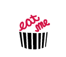
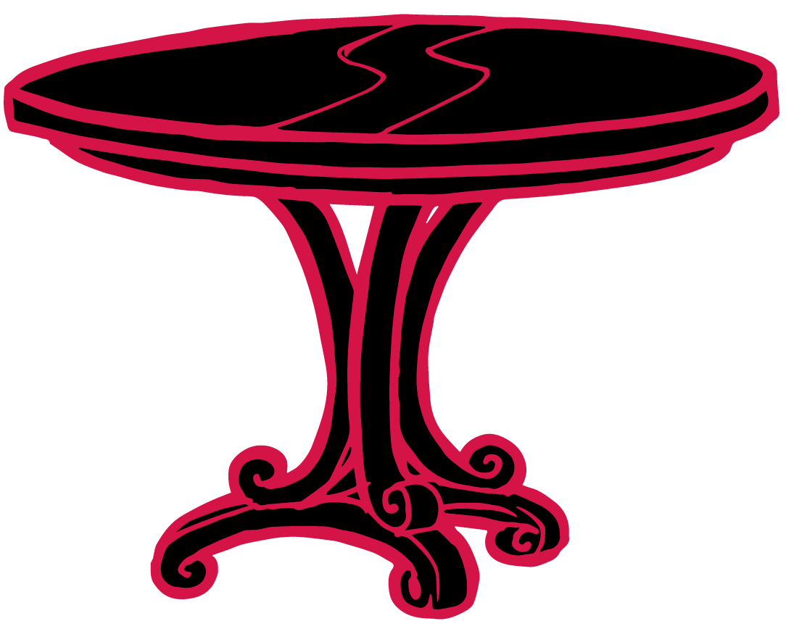
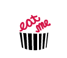
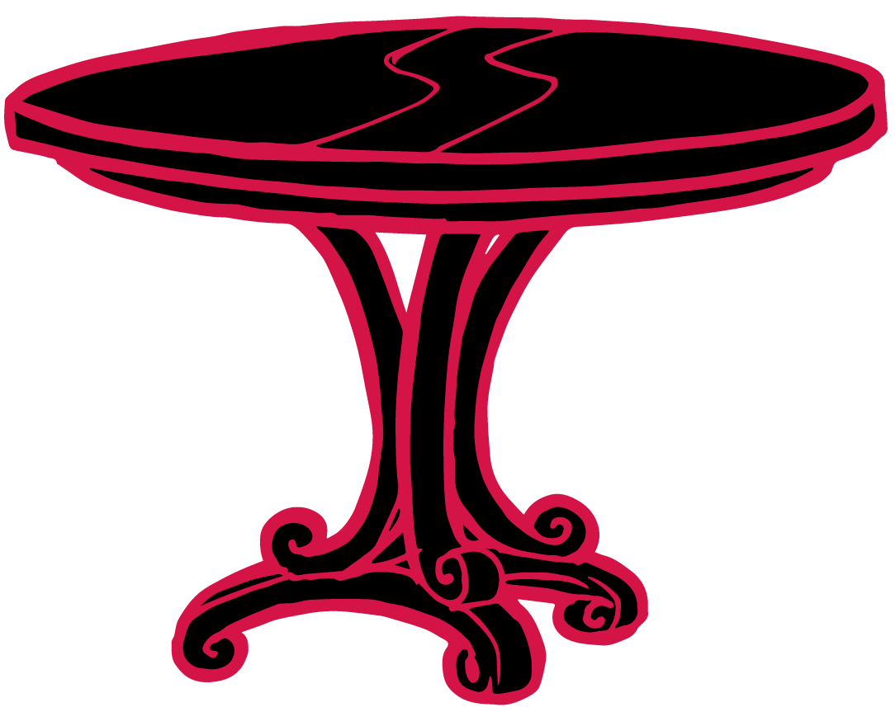

Soon her eye fell on a little box that was lying under the table:
she opened it, and found in it a very small cake, on which the words ‘EAT ME’ were beautifully marked in currants. ‘Well, I'll eat it,’ said Alice, ‘and if it makes me grow larger, I can reach the key; and if it makes me grow smaller, I can creep under the door; so either way I’ll get into the garden, and I don't care which happens!’
She ate a little bit, and said anxiously to herself, ‘Which way? Which way?’, holding her hand on the top of her head to feel which way it was growing, and she was quite surprised to find that she remained the same size: to be sure, this generally happens when one eats cake, but it seemed quite dull and stupid for life to go on in the common way.
So she set to work, and very soon finished off the cake.
 


